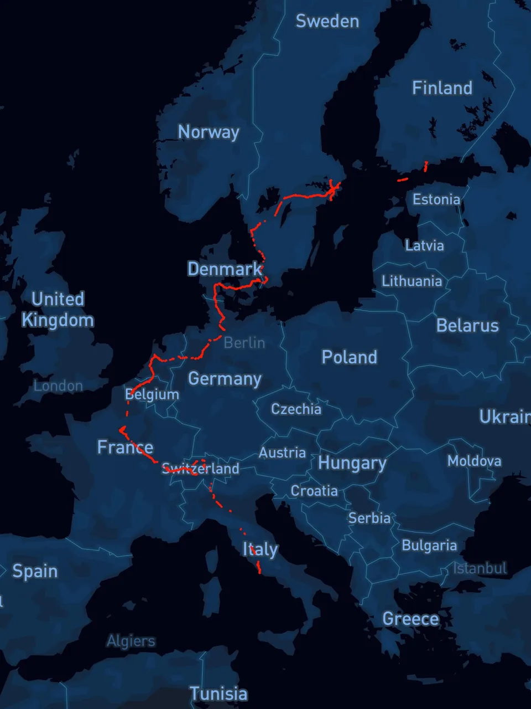

Life & travels
Places I have been, moments I want to remember. Open a collection and take a look around.
Japan Trip 2024
Next journey ↓
In the summer of 2024, I had a trip to
Japan
with my best friends in high school. It is my first time to go abroad. Landing in
Osaka
, then we rode the train "haruka" to
Kyoto
directly and stayed there for 4 days. After that, we made our way to
Kanazawa, Ishigawa
, where we watched a gorgeous sunset besides the Japan sea. Finally, we took Shinkansen to
Tokyo
, experienced a modern city life of Japan, shopping around, watching a band live, having yummy food and so on.
It is true that Japan culture made great influence in my life. Those books, anime helped through a tough time in my high school. So when I first stepped onto that land, I felt so excited and cured.
Here, I would like to share with you a lot of funny stories we experienced.
Kyoto
Kanazawa
Tokyo
Europe Solo Trip 2025
Life back home ↓
In the summer of 2025, I embarked on the first solo-trip of my life, an experience I will never forget. Beginning in
Stockholm, Sweden
, where I spent most of the summer on a research internship there, I made my way through
Denmark, Germany, the Netherlands, France, Switzerland
, finally to
Italy
.
Along the way, I encountered breathtaking landscapes and experienced cultures strikingly different from those I had known in China. In many ways, this journey might shape the next decade of my life.
During this trip, I also began to view about my childhood from a completely new perspective. Many of the questions that had puzzled me for years seemed to find their answers as I traveled. Here, I would like to share these with you, together with many pictures I took.
Sweden
Finland
Denmark
Germany
Netherlands
France
Switzerland
Italy
Photos and stories from Italy are on the way.
Life in China
Xiantao, my hometown
Photos and stories are on the way.
Shanghai
Photos and stories are on the way.
Beijing
Photos and stories are on the way.
Wuhan
Photos and stories are on the way.
Nanjing
Photos and stories are on the way.
Hangzhou
Photos and stories are on the way.
Still exploring the world. To be continued…